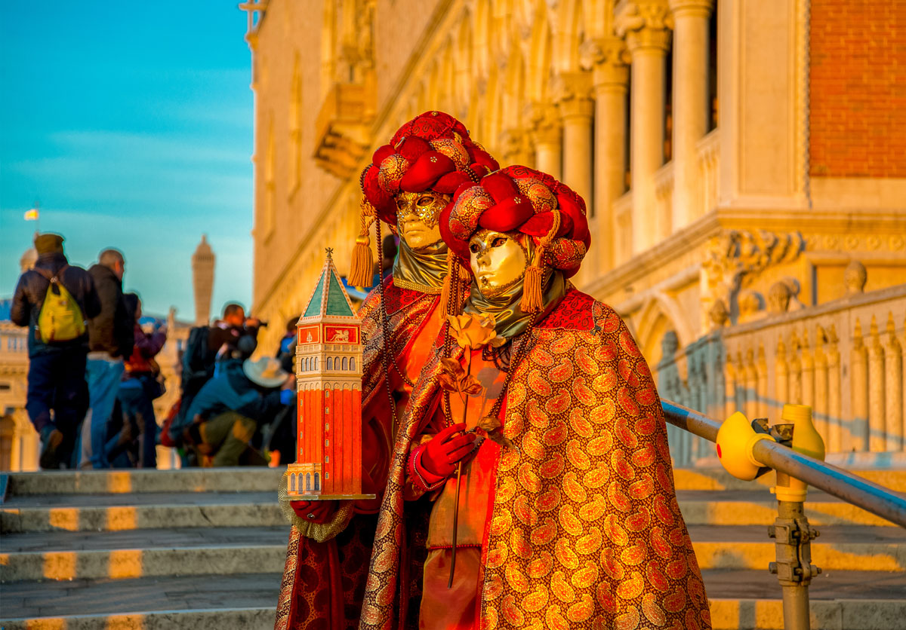

Smarttravel.com |
Home |
Smarttravel.com |
Home |
HalloweenHalloween or Hallowe'en (a contraction of All Hallows' Evening), also known as Allhalloween, All Hallows' Eve,or All Saints' Eve, is a celebration observed in a number of countries on 31 October, the eve of the Western Christian feast of All Hallows' Day. Halloween activities include trick-or-treating (or the related guising) , attending Halloween costume parties, carving pumpkins into jack-o'-lanterns, lighting bonfires, apple bobbing, divination games, playing pranks, visiting haunted attractions, telling scary stories, and watching horror films. |
|
ChristmasMany Canadians have a day off work on December 25 and many spend the day with close relatives or friends. It is customary to exchange gifts, enjoy a special festive meal and, perhaps, attend a special church service. The traditions centered on Christmas gifts in Canada vary a lot between families. In some families, a mythical figure called Santa Claus brings gifts. He travels on a sleigh pulled by reindeer, enters homes via the chimney and leaves presents and candy in Christmas stockings or in a pile under the Christmas tree. In other families, individual members exchange carefully selected gifts. |
|
|  | Carnival of Venice: The floating city’s masked fete (Italy)The Carnival of Venice takes place each year. It takes place just before the six-week Catholic religious observance of Lent. Locals and visitors can dress-up, wear masks and parade fabulous costumes. What can you look forward to? Street parades, theatrical events, masked balls and shows on the city’s famous waterways! |
Chelsea Flower Show: London’s horticultural showcase (England)The RHS Chelsea Flower Show, also known as the ‘Great Spring Show’. A large scale UK flower- and landscaping expo. Gardening enthusiasts travel from around the globe for this 5-day event. What are the highlights of the event? Many show gardens designed by the UK’s best landscaping artists. These include avant-garde pieces that would be at home around futuristic structures or historic castles. Some even show how to garden if you have very little space – that could be useful! |
|

|
Sanfermines : Running of the bulls in Pamplona (Spain)San Fermines festival is a week-long festival hosted in Pamplona, Spain. It’s seen as one of the biggest festivals hosted in Spain every year. It honours Spain’s first bishop Saint Fermin. For this event, over a million people flock to Pamplona each year. What can you look forward to? The well-known daily running of the bulls (encierro). Hundreds of men and women run for their lives in the narrow streets of Pamplona! They dress in white clothes and red sachets. How does it work? The idea is to touch the bull as it passes you or to hit it with a newspaper. Anyone older than 18 can run and it’s completely free of charge! The festival is a true Spanish celebration. There’s so much to see and do… Live bullfights, flamenco music bands, fireworks, fairs, markets and parades. On July 7th everyone joins in a parade, walking with the 15th century statue of the saint. |
Keukenhof: Amsterdam’s Tulip & Flower Festival (Netherlands)Keukenhof, is also known as the ‘Garden of Europe’. In the space of eight weeks, more than 500 flower growers and bulb purveyors show off what they have! The Keukenhof garden dates back to the 15th century. Used to be known as the gardens of the Countess Jacqueline of Bavaria. Today it is over 200 hectares and hosts the annual tulip festival. Are you a flower enthusiast? This is a bucket-list event! |
|
Diwali: Festival of lights(India)Diwali, Divali, or Deepawali is the Hindu festival of lights, typically lasting five days and celebrated during the Hindu Lunisolar month Kartika. One of the most popular festivals of Hinduism, Diwali symbolises the spiritual "victory of light over darkness, good over evil, and knowledge over ignorance". |
The Olympic GamesIt’s hard to imagine that Zeus and the other gods lording over ancient Greece ever envisioned the global event the modern Olympiad has become. For a two-week span, athletes from dozens of countries compete against each other in scores of different sports. And that’s just the Summer Games, which began their modern run in the late 1800s. The Winter Games, featuring sports that largely require snow and ice, draw a smaller field of competitors. But the competition for the gold, silver, and bronze is just as intense. |
|

|
World Cup SoccerThirty-two nations play, but billions of people in countries all around the world drop everything they’re doing for a month every four years to see who claims the title of World Cup soccer champion.The teams that compete in the World Cup finals are those that emerge from a series of qualifying rounds played out over the prior three years. The tournament of tournaments is therefore a showcase of the finest squads from across the continents and hemispheres. |

|
2019 Cricket World Cuphe 2019 ICC Cricket World Cup was the 12th Cricket World Cup, a quadrennial One Day International (ODI) cricket tournament contested by men's national teams and organised by the International Cricket Council (ICC). It was hosted between 30 May to 14 July across eleven venues in England and Wales with the tournament being the fifth time that England had hosted the World Cup while for Wales it was their third. |